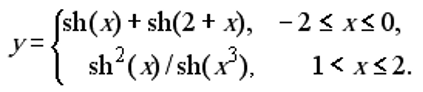
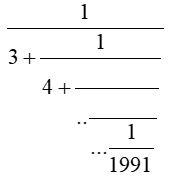
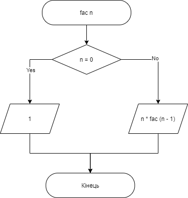
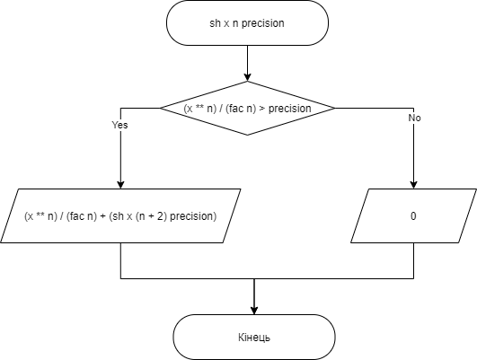
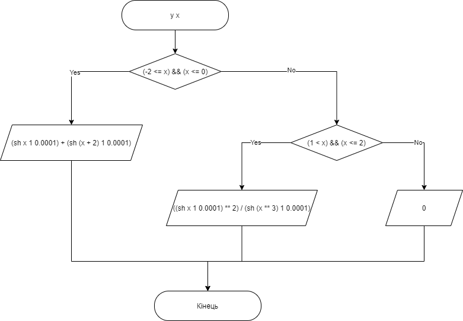
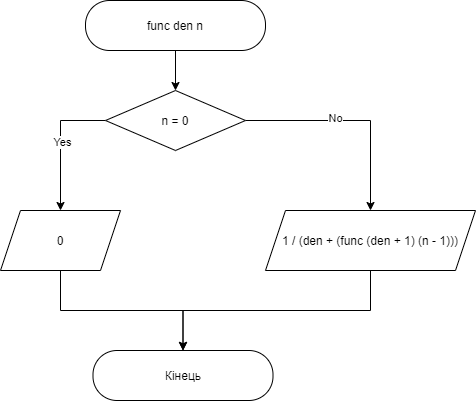
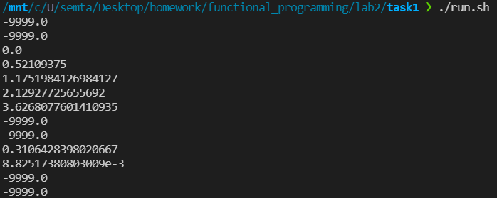
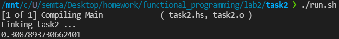

Лабораторна робота 2.
Рекурентні співвідношення для тригонометричних, експоненціальних функцій та ланцюгові дроби.
Варіант 20
Автор
| ПІБ: | Семечненко Тарас Олександрович |
| Курс: | 4 |
| Група: | ІПЗ-42 |
| Рік навчання: | 2021-2022 |
Зміст
Опанувати теоретичні основи застосування рекурентних співвідношень для обчислення тригонометричних,
експоненціальних, степеневих функцій та розробити програми функціональними мовам програмування для
обчислення їх значень
Задача 1
Обчислити значення функції у, розвинувши функцію sh(x) у ряд Тейлора.
Аргумент х змінюється від -3 до 3 з кроком 0.5. Визначити похибку.

Задача 2
Обчислити скінчений ланцюговий дріб, задавши значення n при виклику функції

Блок-схема першого завдання
Блок-схема функції, яка знаходить факторіал числа:

Блок-схема функції, яка знаходить значення функції sh:

Блок-схема функції, яка знаходить значення функції y:

Блок-схеми другого завдання
Блок-схема функції, яка знаходить значення виразу:

Середовище програмування: VS Code
Середовище обране через:
1) Це моє основне середовище в якому програмую,
і його можна використовувати майже для будь-якої мови програмування.
2) Має всі необхідні функції для програмування
і працює набагато швидше в порівнянні з іншими IDE.
Мова функціонального програмування: Haskell
Мова обрана через:
1) Це одна з самих популярних та нових функціональних мов програмування.
2) Дуже багата документація.
3) Мова має дуже приємний та простий синтаксис.
Завдання 1:
-- factorial function
fac :: Double -> Double
fac 0 = 1
fac n = n * fac (n - 1)
-- sh function
sh :: Double -> Double -> Double -> Double
sh x n precision
| (x ** n) / (fac n) > precision = (x ** n) / (fac n) + (sh x (n + 2) precision)
| otherwise = 0
-- y function
y :: Double -> Double
y x
| (-2 <= x) && (x <= 0) = (sh x 1 0.0001) + (sh (x + 2) 1 0.0001)
| (1 < x) && (x <= 2) = ((sh x 1 0.0001) ** 2) / (sh (x ** 3) 1 0.0001)
| otherwise = -9999
-- Main function
main = do
print (y (-3))
print (y (-2.5))
print (y (-2))
print (y (-1.5))
print (y (-1))
print (y (-0.5))
print (y 0)
print (y 0.5)
print (y 1)
print (y 1.5)
print (y 2)
print (y 2.5)
print (y 3)
Завдання 2:
-- Recursion function
func :: Double -> Double -> Double
func _ 0 = 0
func den n = 1 / (den + (func (den + 1) (n - 1)))
-- Main function
main = do
print (func 3 100)
Посилання на код 1 завдання
Посилання на код 2 завдання
Результат виконання 1 програми:

Результат виконання 2 програми:

Нажаль в мові Haskell немає вбудованої функції гіперболічного синуса, тому його значення, я перевірив онлайн калькулятором, і значення моєї функції співпали.
Результати виконання другої програми співпадають з моїми розрахунками на калькуляторі.
В л.р. було виконано 2 завдання за допомогою мови Haskell.
В першому завданні була реалізована рекурсивна функція, похибка якої вимірюється величиною останнього члена послідовності.
В другому завдання був реалізований рекурсивний ланцюговий дріб, значення якого вимірюється кількістю рекурсивних викликів.